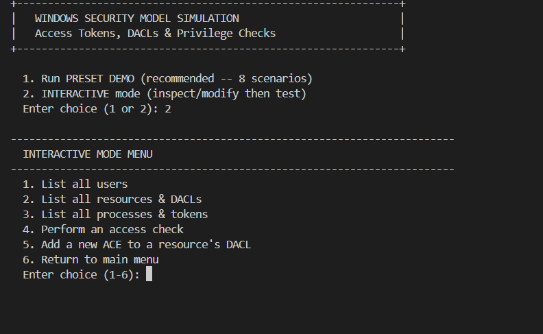
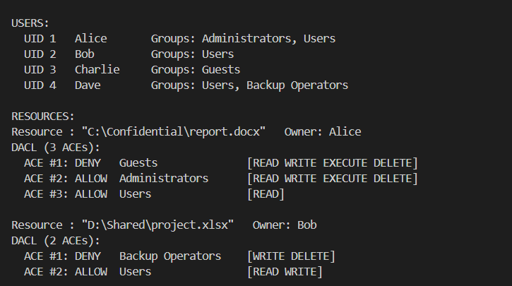
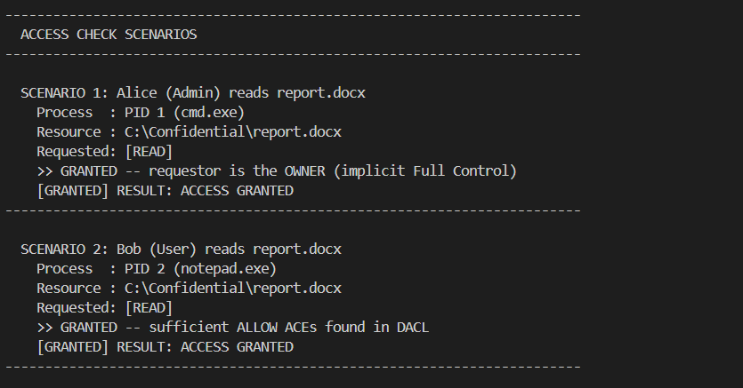

Security is one of the most critical subsystems of any modern operating system. Microsoft Windows employs a sophisticated Discretionary Access Control (DAC) model where every running process carries an Access Token describing its identity and privileges, and every protected resource (files, registry keys, services, kernel objects) is guarded by a Security Descriptor containing an ordered list of Access Control Entries (ACEs).
This project implements a console-based C simulator that models the complete Windows NT security evaluation pipeline. The simulator creates users, groups, processes (with tokens), and resources (with DACLs), then demonstrates access being GRANTED or DENIED based on the same logical rules that the real Windows Security Reference Monitor (SRM) uses.
SeAccessCheck() kernel routine.
SeBackupPrivilege) overriding normal DACL checks.In the Windows NT security architecture, an Access Token is a kernel object generated at user logon. It encapsulates the complete security context of a process:
| Token Component | Description | Example |
|---|---|---|
| User SID | Uniquely identifies the logged-in user account | S-1-5-21-...-1001 (simplified to UID 1 in our simulator) |
| Group SIDs | List of all security groups the user is a member of | Administrators, Users, Backup Operators |
| Privileges | System-wide capabilities that bypass normal access checks | SeBackupPrivilege, SeDebugPrivilege |
Every process inherits the token of the user who launched it. Child processes inherit the parent's token.
Every securable object in Windows has a Security Descriptor that contains:
Each ACE in a DACL contains three fields:
| ACE Field | Description |
|---|---|
| Type | ALLOW or DENY |
| Trustee (SID) | The user or group this ACE applies to |
| Rights Bitmask | READ, WRITE, EXECUTE, DELETE (or any combination) |
The fundamental rule of Windows DACL evaluation is that ACEs are processed sequentially from first to last. Microsoft recommends placing DENY ACEs before ALLOW ACEs. If a DENY ACE matches the requesting token and covers any requested right, access is immediately refused — the system does not continue checking subsequent ALLOW entries. This is a deliberate security design: explicit denials always take precedence.
Privileges are system-wide overrides granted to specific accounts or groups. Unlike ACEs (which are per-object), privileges apply globally. For example:
SeBackupPrivilege — Allows reading any file regardless of its DACL (used by backup software like Windows Backup, Veeam).SeDebugPrivilege — Allows attaching a debugger to any process.SeTakeOwnershipPrivilege — Allows taking ownership of any object.The following diagram shows how the simulator's core data structures relate to each other:
| Right | Bit Value | Hex | Description |
|---|---|---|---|
| READ | 1 | 0x01 | Read contents of a file or resource |
| WRITE | 2 | 0x02 | Modify or write to a file |
| EXECUTE | 4 | 0x04 | Execute a program or script |
| DELETE | 8 | 0x08 | Delete a file or resource |
| FULL CONTROL | 15 | 0x0F | All rights combined (R+W+X+D) |
| UID | User | Groups | Role |
|---|---|---|---|
| 1 | Alice | Administrators, Users | System administrator |
| 2 | Bob | Users | Standard user |
| 3 | Charlie | Guests | Guest / restricted user |
| 4 | Dave | Users, Backup Operators | Backup technician |
| PID | Process | User | Groups in Token | Privileges |
|---|---|---|---|---|
| 1 | cmd.exe | Alice | Administrators, Users | SeBackupPrivilege |
| 2 | notepad.exe | Bob | Users | (none) |
| 3 | explorer.exe | Charlie | Guests | (none) |
| 4 | backup.exe | Dave | Users, Backup Operators | SeBackupPrivilege |
| Resource | Owner | ACE #1 | ACE #2 | ACE #3 |
|---|---|---|---|---|
C:\Confidential\report.docx |
Alice | DENY Guests [FULL] | ALLOW Admins [FULL] | ALLOW Users [READ] |
D:\Shared\project.xlsx |
Bob | DENY Backup Ops [WRITE DELETE] | ALLOW Users [READ WRITE] | — |
C:\System\boot.ini |
Alice | ALLOW Admins [READ] | — | — |
FUNCTION access_check(token, resource, requested_rights):
// Step 0: Owner override
IF token.uid == resource.owner_uid THEN
RETURN GRANTED ("Owner has implicit Full Control")
// Step 1: Walk DACL entries sequentially
granted_mask = 0x00
FOR EACH ace IN resource.dacl.entries:
IF ace does NOT match token (user SID or any group SID):
CONTINUE to next ACE
IF ace.type == DENY:
IF (ace.rights AND requested_rights) != 0:
RETURN DENIED ("Explicit DENY matched")
ELSE IF ace.type == ALLOW:
granted_mask = granted_mask OR ace.rights
// Step 2: Check accumulated rights
IF (granted_mask AND requested_rights) == requested_rights:
RETURN GRANTED ("Sufficient ALLOW ACEs accumulated")
// Step 3: Implicit deny (default)
RETURN DENIED ("No ACE grants remaining rights")
Figure 1: Windows DACL Access Check Evaluation Flowchart
| Function | Purpose |
|---|---|
access_check() | Core DACL evaluation: owner check, deny-before-allow walk, implicit deny |
ace_matches_token() | Determines if an ACE's trustee SID matches the requesting token (user SID or any group SID) |
token_has_privilege() | Checks whether a token carries a specific named privilege string |
build_demo_world() | Constructs all users, groups, resources, processes, and DACLs for the preset demo |
run_demo() | Executes all 8 preset access-check scenarios with formatted output |
interactive_mode() | Menu-driven loop allowing runtime inspection and modification of tokens and DACLs |
read_int_safe() | Robust input reader using fgets + sscanf to prevent infinite loops on invalid input |
rights_to_string() | Converts a bitmask to a human-readable string (e.g., "READ WRITE") |
int access_check(const AccessToken *token, const Resource *res,
int requested_rights, char *reason, int reason_size)
{
// Step 0: Owner always gets implicit full control
if (token->uid == res->owner_uid) {
snprintf(reason, reason_size,
"GRANTED -- requestor is the OWNER");
return 1;
}
// Step 1: Walk ACEs in order
int granted_mask = 0;
for (int i = 0; i < dacl->count; i++) {
const ACE *ace = &dacl->entries[i];
if (!ace_matches_token(ace, token)) continue;
if (ace->type == ACE_DENY) {
if (ace->rights & requested_rights)
return 0; // DENIED immediately
} else {
granted_mask |= ace->rights; // accumulate
}
}
// Step 2: Check accumulated rights
if ((granted_mask & requested_rights) == requested_rights)
return 1; // GRANTED
// Step 3: Implicit deny
return 0; // DENIED
}
| Mode | How to Select | Description |
|---|---|---|
| Preset Demo | Press 1 at startup |
Runs 8 curated scenarios automatically, showing environment setup and access check results |
| Interactive Mode | Press 2 at startup |
Menu-driven interface to list users/tokens/DACLs, add custom ACEs, and perform arbitrary access checks |
When the program starts, the user selects between the preset demo (option 1) or interactive mode (option 2). The interactive mode provides a menu to inspect all security objects and perform custom access checks.

The demo environment displays all configured users with their group memberships,
followed by each resource's DACL showing the ordered ACE entries. Note how
report.docx has a DENY ACE for Guests placed before the ALLOW
ACEs — this is the critical deny-before-allow ordering.

The simulator evaluates each scenario and prints the reasoning trace: which token requested which rights on which resource, and why the result is GRANTED or DENIED.

The preset demo runs 8 distinct scenarios, each designed to demonstrate a specific Windows security principle:
| # | Scenario | Request | Result | Principle Demonstrated |
|---|---|---|---|---|
| 1 | Alice reads report.docx |
READ | GRANTED | Owner Authority: File owner has implicit full control; DACL is not even consulted. |
| 2 | Bob reads report.docx |
READ | GRANTED | Group Allow: ACE #3 grants READ to the Users group; Bob is a member of Users. |
| 3 | Bob writes report.docx |
WRITE | DENIED | Implicit Deny: No ACE grants WRITE to Users; after walking all ACEs, the right remains unsatisfied. |
| 4 | Charlie reads report.docx |
READ | DENIED | Explicit Deny Precedence: ACE #1 explicitly denies Guests all rights; even though Users are allowed READ, Guests are blocked first. |
| 5 | Dave writes project.xlsx |
WRITE | DENIED | Deny-Before-Allow: Dave is in both Users (ALLOW WRITE) and Backup Operators (DENY WRITE). The DENY ACE appears first in the DACL, so access is immediately rejected. |
| 6 | Dave reads project.xlsx |
READ | GRANTED | Targeted Deny: The DENY ACE only covers WRITE and DELETE; READ is not denied, so it accumulates from the Users ALLOW ACE. |
| 7 | Bob reads boot.ini |
READ | DENIED | Implicit Deny: The only ACE grants READ to Administrators; Bob is not an admin, so the right is never granted. |
| 8 | Dave reads boot.ini |
READ | GRANTED | Privilege Bypass: Dave's token carries SeBackupPrivilege, which overrides the DACL entirely — just like the real Windows Backup utility. |
gcc -o windows_acl.exe windows_acl.c -Wall
.\windows_acl.exe
Select option 1 for the preset demo or 2 for interactive mode.
GitHub: https://github.com/Sriram-Nambiar/os-security-simulator
This project successfully demonstrates the core Windows NT security authorization model through a working C simulation. The key takeaways are:
SeBackupPrivilege allow trusted system utilities to bypass normal ACL restrictions for legitimate administrative tasks.The simulator provides both a preset demonstration for quick evaluation and an interactive mode for experimentation, making it a practical educational tool for understanding operating system security fundamentals.